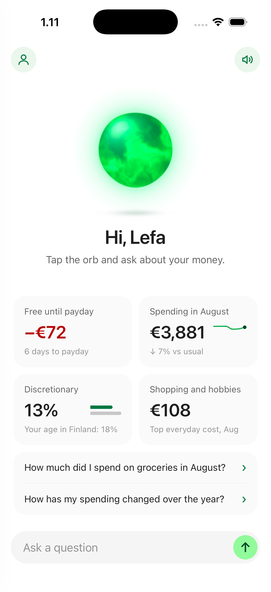

Introducing Penni
Ask your money.
Every day, moneyleaves a trail.
Most of us never see where it leads.
Three baskets.
Everything you spend falls into one of them.
Extras are the partyou can steer.
Essentials
€0
a month
Surprises
€0
a month
Extras
€0
a month


Just ask.
By voice or text. Clear answers, in seconds.
Every bank. One coach.
Connect your other banks, read-only.
Penni
Ask your money.
A money coach for S-mobiili